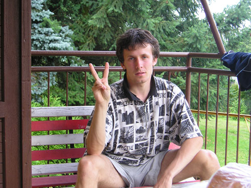

Jmenuji se Martin Lukeš, je mi 23 let a studuji prvním rokem na ČVUT, fakultě elektrotechnické studijní (FEL)- obor STM. Fel pro mě není první vysokou školou, mám za sebou již působení na jedné vysoké škole - bohužel neúspěšné.
Dlouhodobě jednou z mých zálib byla a je matematika, nicméně na MFF jsem zjistil, že tuto školu vlastně ani dělat nechci. Svůj neúspěch na MFF jsem si na FELu vynahradil a v prvním semestru celkem hladce přešel přes obávanou Algebru a o něco jednodušší Matematiku, která by měla podle matfyzáckých zásad název Matematická analýza. Oba dva předměty jsem měl oceněny nejlepší možnou známkou-A. Tento Semestr jsem zakončil Matematickou logiku v předtermínu s známkou odpovídající času strávenému přípravou - D. Časová tíseň je hrozná věc. :(
S Matematikou jsem stále v kontaktu, ač ji nestuduji. Pomáhám svým přátelům i známým k jejímu pochopení. Pokud máte problém s jejím pochopením, můžete mě zkusit kontaktovat na emailu wox2@seznam.cz a dohodnout se na nějaké té konzultaci či sérii konzultací.
Někteří mě možná znáte díky mé hráčské a autorské činnosti. V minulosti jsem byl autorem série článků o karetní hře Magic the Gathering, které byly umístěny na serveru Cmus.cz a hraj.cz. Také jsem hrál magicové turnaje, ať už mluvím o skutečných turnajích nebo online turnajích. Přezdívky, pod kterými se pohybuji na internetu je wox2, wox2 [CZ] nebo woxie.
Mým oblíbeným alkoholem je vodka, zvířetem vlk a barvou modrá.